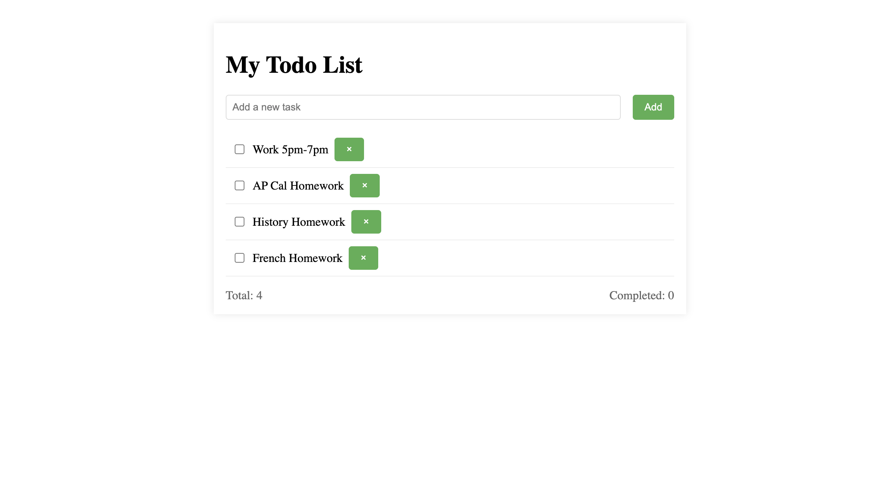
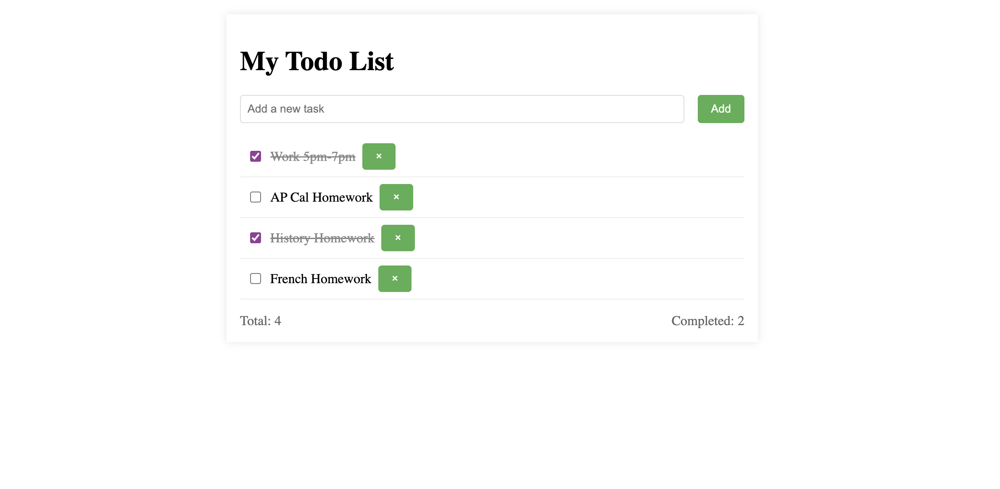
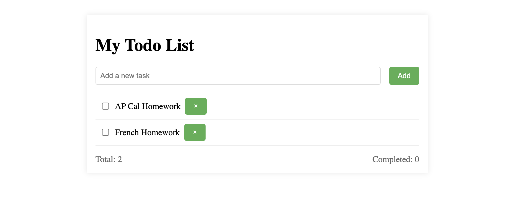

A productivity-focused web application that helps users organize daily tasks, track progress, and improve efficiency through a simple and responsive interface.
🚀 Live Demo 💻 GitHubThe application allows users to create, manage, complete, and remove tasks. It provides a clean environment for tracking responsibilities and staying organized.
I independently designed and developed the complete project, including the user interface, responsive layout, task management functionality, and JavaScript interactions.
HTML5 was used to structure the application, CSS was used to create the modern responsive design, and JavaScript powers the dynamic task interactions.

Users can quickly create and organize tasks through a simple task input system.

Completed tasks can be checked off to visualize daily productivity and progress.

Users can remove completed or unnecessary tasks to maintain a clean workspace.